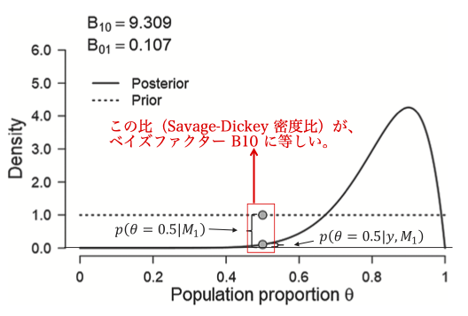

[PDF]
心理学とベイズ統計学
心理学の主要な論文誌において、ベイズ統計学の特集号が相次いでいる。
- Psychological Methods, Vol. 22 (2017)
- Psychonomic Bulletin & Review, Vol. 25 (2018)
- Journal of Mathematical Psychology, Vol. 72 (2016) ← ベイズファクターに特化した内容
ベイズファクター
ベイズの定理によると、
p(θ∣y)=p(y∣θ)p(θ)p(y) (1)
で、ベイズ統計学においてはこの分子（尤度と事前分布の組）を統計モデルという。
比率の仮説検定
標本理論にもとづけば、成功確率 θ について以下の帰無仮説をおくことが多い。
- H0 : θ=0.5 [＊ ベイズ的には、 p(θ=0.5)=1, p(θ≠0.5)=0 と考えていることに等しい。]
- H1 : θ≠0.5 [＊ ベイズ的には、 θ∼Uniform(0,1) とおいていると考えればよい。]
結局、標本理論における H0 と H1 の比較は、ベイズ統計学においては
- M0 : yi∼Bernoulli(θ), θ=0.5
- M1 : yi∼Bernoulli(θ), θ∼Uniform(0,1)
という2つのモデル比較を行うことに対応していると考えられる。
周辺尤度
あらゆるベイズ推論は特定の統計モデルの下で行われるから、式 (1) は
p(θ∣y,M0)=p(y∣θ,M0)p(θ∣M0)p(y∣M0)
p(θ∣y,M1)=p(y∣θ,M1)p(θ∣M1)p(y∣M1)
のようにモデルを条件づける形で書いてもよい。
このとき、各分母 p(y∣M0),p(y∣M1) を周辺尤度（エビデンス）と呼ぶ。それぞれパラメータ空間の全体を Θ とすると、
p(y∣M0)=∫Θp(y∣θ,M0)p(θ∣M0)dθ
p(y∣M1)=∫Θp(y∣θ,M1)p(θ∣M1)dθ
と尤度をパラメータ θ で周辺化したものに相当する。
周辺尤度は、パラメータ θ のとりうるすべての値について考慮したときの、手元のデータ y に対する各モデルの持つ平均的な予測力と解釈できる。つまり、周辺尤度の大きいモデルほどデータを説明する上でふさわしいといえる。そこで、周辺尤度の比によってベイズファクター
B10=p(y∣M1)p(y∣M0)
を定義する。
B10>1 であれば、その程度に応じて
M1 が
M0 に比べてデータを説明・予測する上でふさわしいと解釈できる。
具体的な基準として、以下が提案されている（Jeffreys, 1961）。
| B10 |
M1 を M0 より支持するか |
| < 3.2 |
支持できても実質的意味があるとは考えにくい |
| 3.2-10 |
支持に実質的な意味がある |
| 10 < |
より強い支持を与える |
→ Kass & Raftery (1995) による修正
事後オッズと事前オッズ
ベイズの定理をモデルについての確率の更新に用いて、
p(M0∣y)=p(y∣M0)p(M0)p(y)
p(M1∣y)=p(y∣M1)p(M1)p(y)
と行うことを考える。
このとき、事後モデル確率の比（事後モデルオッズ）を取れば、分母部分は打ち消しあって、
p(M1∣y)p(M0∣y)=p(y∣M1)p(y∣M0)p(M1)p(M0)=B10×p(M1)p(M0)
と変形できる。すなわち、
ベイズファクターは事前モデルオッズを事後モデルオッズへ変換する際にデータがもたらす「証拠の重み」を表す量と解釈できる。また、同時に
事前オッズと事後オッズの比とも解釈できる。
Savage-Dickey 法
パラメータが多次元になると、ベイズファクターの積分計算は大変になる。しかも、単純な乱数発生に基づく周辺尤度の推定は、確率分布の裾領域の評価精度に問題があり、実用的ではない。
ここで、等号制約によって M0 が M1 にネストしている場合、ベイズファクターは M0 で制約するパラメータの値（例えば θ=0.5）における M1 の事前確率密度と事後確率密度の比（Savage-Dickey 密度比, Savage-Dickey density ratio）に等しくなる。
B10=p(θ=0.5∣M1)p(θ=0.5∣y,M1)

このようにしてベイズファクターを求める方法を、Savage-Dickey 法という。
❗️ データを得ることで、パラメータのある値における確率密度が事前と事後でどちらがどれくらい高いかを比較したのがベイズファクターになるということ。H0:θ=0.5 における確率密度が図のように事前<事後であれば、H0 は支持されないことになる。
‼️ Savage-Dickey 法の証明は、Wagenmakers et al. (2010) の Appendix A で確認すること。
平均値のベイズ的仮説検定
観測データが独立な正規分布に従うというモデル
yi∼N(μ,σ2)
を考える。
ここで、母平均 μ について伝統的な検定では以下のような仮説を設定する。
- H0 : μ=0 [＊ ベイズ的には、μ=0 の一点事前分布をおいていることに相当する。]
- H1 : μ≠0 [＊ もし μ のとりうるすべての範囲の一様事前分布をおくと非正則になる。]
つまり、M0 については比率の場合と同様でいいが、M1 については非正則でない事前分布を設定する必要が出てくる。
Jeffreys-Zellner-Siow (JZS) の事前分布
そこで、事前分布が y の単位に依存しないよう、
δ=μσ
を考え、標準コーシー事前分布
δ∼Cauchy(1) をおく。これによって、ベイズファクターが
デシデラータ desiderata と呼ばれる望ましい性質を持つ。
また、母分散 σ2 については事前分布の設定がベイズファクターにあまり影響しないことが知られているので、Jeffreys の事前分布 p(σ2)∝1/σ2 をおく。
以上の設定を、Jeffreys-Zellner-Siow (JZS) の事前分布と呼ぶ（Bayarri & Garcia-Donato, 2014）。
ベイズファクターの特長
帰無仮説を支持できる
従来の p 値が仮説に対する非対称性を理由に批判されてきたのに対し、ベイズファクターは2つのモデルを平等に扱う。
実際、帰無仮説側を支持する心理学研究も多数出版されている。
逐次更新ができる
従来の仮説検定では、事前に決めた人数分のデータを集めてから検定を行う必要がある。人数を足しながら検定を繰り返していくと第一種の誤りが上昇してしまう。これを統制するためには逐次検定 sequential testing を行う必要がある。
ベイズファクターについては、一定の閾値に達するまで順次データを追加していくことで問題ない。
＊仮説検定は観測される可能性があったが実際はされなかったデータに依存するのに対し、ベイズ統計学は実際に観測されたデータのみを条件づけるだけでよいことによる（Wagenmakers (2007) の Online Appendix 参照）。
同程度の予測力なら単純なモデルを選ぶ
周辺尤度は、予測力が同程度なら単純なモデルにおいてより大きな値をとる。
→ ベイズファクターもシンプルにデータを説明できるモデルを支持する傾向にある。（automatic Ockham's razor, Smith & Spiegelhalter, 1980）Lee & Wagenmakers (2013 井関訳, 2017) 参照。
望ましい理論的性質
JZS 事前分布にもとづくベイズファクターは一致性を持つ。その他、典型的な設定のもとでベイズファクターは複数の望ましい理論的性質を満たす。
ベイズファクターの留意点
相対比較である
支持されたモデルも実際にはデータ生成メカニズムとして不十分ということはありうる。
モデルの絶対的当てはまりのチェックについて、事後予測チェック posterior predictive check が基本。
（＊モデルが適切なら事後予測分布と観測データの分布には類似性が見られるはず。）
事前分布の設定
点帰無仮説モデル M0 に対して比較するモデル M1 の事前分布によってベイズファクターの値は大きく左右されうる。
- 確率の抽出 elicitation （応用上利用可能な情報を事前分布として取り出す）＊身長の事前分布がどんな値でも同確率というのは現実的に妥当でない。
- 客観ベイズ objective Bayes の立場から標準的に利用できる、研究者間で合意の取れた事前分布を用意する。
- デシデラータをリストアップし、それを満たすもののうちシンプルな事前分布を導出（既定事前分布 default prior）＊ JZS prior もこの一種
計算が大変な場合がある
これまで、ベイズファクターを十分な精度で求めるための汎用的方法がなかった。
→ WAIC, LOO といった MCMC 乱数列から利用できる汎用的な指標の利用
＊ベイズファクターを計算するための汎用的方法として、ブリッジサンプリングが提案され注目されている
ブリッジサンプリングと数値的方法
Savage-Dickey 法が通用しないような場面で、ベイズファクターの評価に必要となる周辺尤度をどうやって算出するか。
ナイーブ・モンテカルロ法
ナイーブ・モンテカルロ法による周辺尤度の推定は、
θ̃ i∼p(θ)
p̂ 1(y)=1R∑i=1Rp(y∣θ̃ i)
と行われるが、θ̃ i が広い範囲から出されてくると、よりばらつきの少ない尤度関数ではほとんどの p(y∣θ̃ i) の値がほぼゼロになってしまう。（"そんな θ ではこんな y は得られっこない"）
つまり、事前分布よりももっとばらつきの少ない分布からのサンプリングを考える必要がある。
（重点サンプリング、一般化調和平均サンプリング、など重点分布を用いる方法）
が、裾の重さについて厳密に条件を満たす分布を選ぶのは容易でない。
ブリッジサンプリング法
提案分布 g(θ) と事後分布 p(θ∣y) からのサンプリングを両方行い、その結果をブリッジ関数に入れた上で平均化し、事前分布との関係を調整する（ような感じ）。
提案分布としては正規分布が利用されることもあり、分布の裾について細かい調整を行う必要がない。
R の bridgesampling パッケージ（Gronau, Singmann, & Wagenmakers, 2017）によって実行できる。
まとめ
ベイズファクターの算出ができるソフトウェア環境